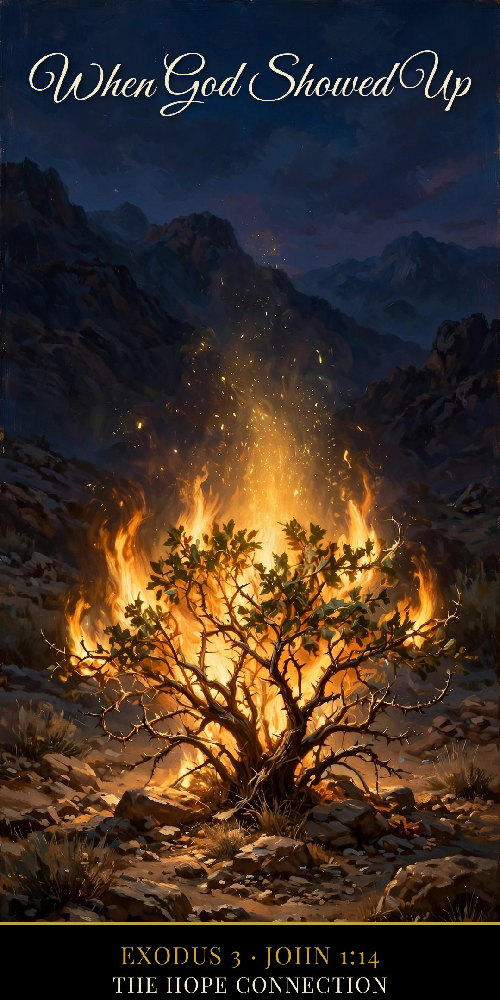

The Word became flesh and dwelt among us, and we have seen his glory.
John 1:14 (ESV)
Ever run across a word like “theophany” and feel like the Bible teachers are keeping secrets from the rest of us? Let’s fix that, in plain words.
A theophany is God showing up where people could see Him. The word itself tells the story: the Greek theos means “God,” and phainō means “to appear, to show.” A theophany is an appearing of God.
Why He Had to Come Veiled
Here’s the hard part first. God told Moses, “Man shall not see me and live” (Exodus 33:20). That’s not God being distant. That’s a holy God and sinful people — His unveiled glory is a consuming fire, and we can’t bear it. So when God showed Himself in the Old Testament, He veiled Himself. He came down in a form our eyes could take in: fire that didn’t burn up the bush, a cloud on a mountain, a visitor who sat and ate with Abraham.
Like a king stepping out to meet his people, dressed down so the meeting doesn’t overwhelm them. The King still came. He just came gently.
Where God Showed Up
The burning bush — “God called to him out of the bush” (Exodus 3:4), and the ground was holy, but the bush wasn’t consumed. Fire, with mercy wrapped around it.
Mount Sinai — the whole mountain wrapped in smoke and cloud, the LORD descending in fire (Exodus 19). Israel heard His voice and lived — because He chose the covering.
Abraham’s visitors — the LORD appeared to him by the oaks of Mamre (Genesis 18) and sat at his table.
Isaiah’s vision — “I saw the Lord sitting upon a throne, high and lifted up” (Isaiah 6:1), and even the seraphim covered their faces.
And again and again there is the Angel of the LORD, who speaks as God and receives worship (Genesis 16; Judges 13). The church has long seen in Him the Son Himself, appearing before Bethlehem — a Christophany: Christ showing up before His birth.
Where It Was All Heading
Every theophany was a down payment. A shadow pointing at the substance.
“The Word became flesh and dwelt among us, and we have seen his glory” (John 1:14). In Jesus, God didn’t just visit — He came to stay. The glory that would have consumed us at Sinai took on flesh, bore the fire of God’s wrath in our place at the cross, and rose. That’s why the veil is gone for everyone who is in Christ.
And one day the last veil comes off: “We shall see him as he is” (1 John 3:2). No bush, no cloud, no covering — because the blood of Jesus has made a sinful people able to stand in the light and live.
Christ Proclaimed. Jesus is Lord.
Reflect — Questions & Answers
1. Is Jesus a theophany? He is more than one. A theophany was a visit; the incarnation is God come to stay — “The Word became flesh” (John 1:14), fully God and fully man forever. The Old Testament appearances were the shadow; Jesus is the substance.
2. Why doesn’t God show up like that for me now? He has given you something better than a burning bush: His finished Word, and His Spirit living in you (John 16:13; 1 Corinthians 3:16). The appearances were for a people still waiting on the promise. You live on the other side of the cross — the Presence they saw in flashes, you carry every day.
The Hope Connection Podcast
Real hope, no judgment — meeting others where they are in the Name of Jesus. Hear Lewis’s story and new episodes every week.